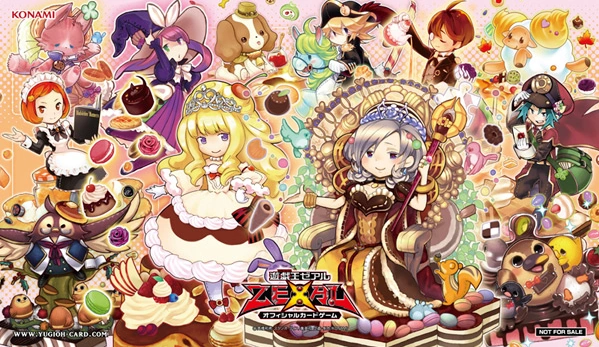

The Sweetest Madolche Recipe

The Madolche Core
These are the staples within the Madolche archetype you'll be using to
build your deck list. While your ratios may fluctuate, these cards are
the bare-minumum you'll want to have on hand.
Main Deck Monsters
- 3x Madolche Magileine
- 3x Madolche Anjelly
- 3x Madolche Petingcessoeur
- 3x Madolche Hootcake
- 2x Madolche Messengelato
- 1x Madolche Puddingcess
Main Deck Spells
- 3x Madolche Salon
- 1x Madolche Ticket
- 1x Madolche Chateau
Main Deck Traps
Extra Deck Monsters
- 2x Madolche Teacher Glassouffle
- 2x Madolche Queen Tiaramisu
- 3x Madolche Puddingcess Chocolat-a-la-Mode
- 1x Madolche Sistart
Madolche Gameplay Loop
Here is a basic combo you can use to get your plays started.
- Normal summon Madolche Anjelly, and then activate her effect to SS Madolche Petingcessoeur from the deck.
- Use Petingcessoeur's effect to SS Madolche Puddingcess from your deck.
- Overlay Petingcessoeur and Puddingcess into Madolche Teacher Glassouffle.
- Overlay Teacher into Madolche Puddingcess Chocolat-a-la-Mode.
- Activate Puddingcess's effect to shuffle Anjelly from the GY to the deck.
- Trigger Puddingcess's second effect, detaching Petingcesseour and SS Madolche Hootcake from the deck.
- Activate Hootcake's effect to banish Petingcesseour and SS Madolche Messengelato from deck.
- Activate Messengelato's effect to add Madolche Chateaufrom your deck to your hand.
- Activate Madolche Chateau, returning Madolche Monsters from your Deck to your Main Deck.
- Trigger Madolche Puddingcess Chocolat-a-la-Mode again to detach Puddingcess and SS Messengelato from Deck.
- Activate Messengelato's effect to add a Ticket, Salon, or Promenade to your hand.
- XYZ Summon Madolche Teacher Glassouffle in Defense position using 2 Level 4 Monsters.
This basic gameplay loop can be accessed via several methods, and you'll find utilizing your
Madolche Spells will help assist with returning Madolche Monsters from the GY to your Deck or Hand,
triggering your cards to continue building advantage. Bon a petit!